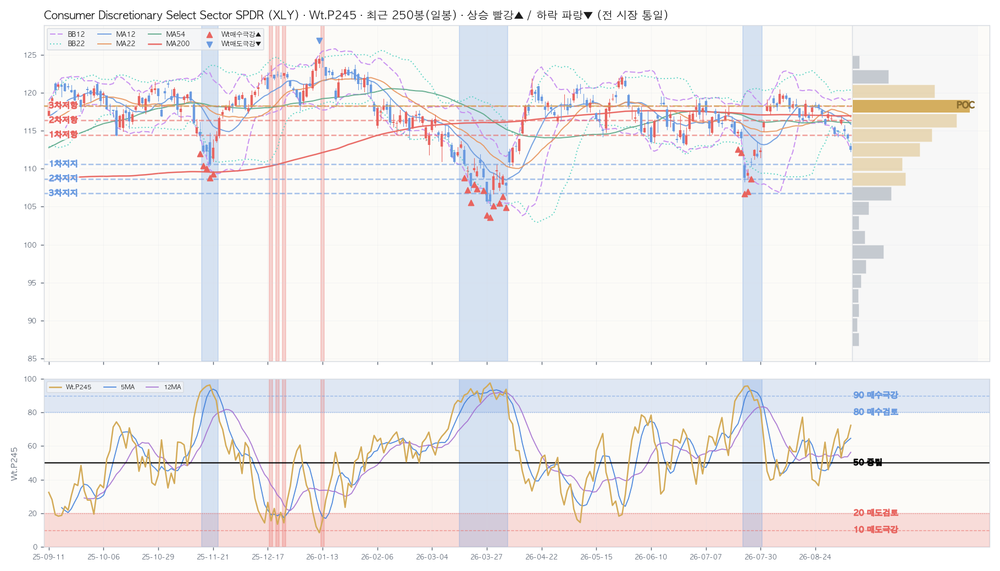

NixStock · Ticker Signal Report · 재구성 · 2026-09-09 · v1.1
Consumer Discretionary Select Sector SPDR (XLY)
📈 TradingView
Consumer Discretionary Select Sector SPDR 추종 ETF · US · 정규장 마감
US TICKER
2026-09-09 (수) · 15:40 KST / 2026-09-09 (수) · 02:40 ET
By Opus 4.8 · Sig=Wt.P245 · 1년(250봉) · BB12
★ 결론 (먼저 읽는 한 줄)
⚠️ 매수 비추천 — 하단 band-walking(단기 하방 이탈 진행)
왜? (데이터 → 결론)
→WtAll 75(D) / 97(W) / 98(M) — 주·월 상승 확률(충분히 저가·매수 관점), 일봉 중립. (Sig 높음=상승 확률↑=저가, 강세/고점 아님)
→가격 112.46 · 당일 ▼ -1.34% · 200일선 116.98 · RSI5 24.1.
→미 시장 통합(S&P1500) 온도 WARM 62.52℃ (V2 · 미 시장 통합 S&P1500) · 시장온도 WARM 62.52℃ (V2 · 미 시장 통합 S&P1500).
→자체 신호 SU31 34.8·SU51 24.5 / SA02.P245 — 단기 혼재.
→⚠️ 매수 비추천 — 하단 band-walking 진행(떨어지는 칼 · 저가 매수 금물 · 추세 역행 X) — BB12 하단 band-walking(최근 10봉 중 6봉 하단 근접·이하) · 다음 단계 관찰: 밴드 부착 이탈 → 박스권 안정 → 밴드 스퀴즈(변동성 수축) → 돌파. (§1 차트 참조)
위 5개 합쳐진 결과가 판정.
통합 판정 미연결(판정 JSON 없음 — 실측 파생 결론만). 아래 §1~§6·§F 는 이 결론의 근거이고, 맨 끝 §G · 읽는 법(용어·수식·레퍼런스) 에 모든 용어와 산식이 있습니다. 확률적 참고 — 매수/매도 추천 아님.
▶ 해석– 주·월 종합신호 97/98 = 상승 확률 높음(충분히 저가)
– 일봉 RSI5 24 = 단기 바닥권(많이 빠짐)
– 미 시장 통합(S&P1500) 온도 WARM 62.52℃ (V2 · 미 시장 통합 S&P1500)
– 검증된 매수신호 현재 점등 3개 = 매수 조건 켜짐

캔들 + BB12(보라 대시)·BB22(청록 점선) + MA12/22/54/200 + Wt.P245 신호선(하단 패널) + 매수(▲)/매도(▼) 마커. Wt.P245 상단선=매도 극강/하단선=매수 극강 기준. 자체 렌더 · 알고리즘 비공개. 우측 회색=매물대(금색=POC)·적점선=저항/청점선=지지. ⚠️ 현재 — BB12 하단 band-walking(최근 10봉 중 6봉 하단 근접·이하).
§1b · 매물대 (Volume Profile · 최근 480봉≈2년 · 20단계)
🎯 POC(최대 거래 가격대) 118.28 (15.7%) · 현재가 위=저항 · 현재가 112.46 기준 위 매물대 66% / 아래 34%
| 레벨 | 가격대 | 현재가 대비 | 거래비중 |
|---|
| ▲ 저항 1차 | 113.47~115.40 | +1.8% | 10.6% |
| ▲ 저항 2차 | 115.40~117.32 | +3.5% | 13.9% |
| ▲ 저항 3차 | 117.32~119.24 | +5.2% | 15.7% |
| ▼ 지지 1차 | 109.63~111.55 | -1.7% | 6.7% |
| ▼ 지지 2차 | 107.70~109.63 | -3.4% | 7.1% |
| ▼ 지지 3차 | 105.78~107.70 | -5.1% | 5.2% |
매물대 = 지난 2년 거래량이 가격대별로 쌓인 곳(가중 High0.1·Low0.1·Open0.3·Close0.5 · 하우스 표준 20단계). 많이 쌓인 곳 = 매물 소화 필요 = 저항/지지로 작동. 1차 = 현재가에서 가장 가까운 매물대. 현재가가 매물대 상단권 → 위 저항 두꺼움(반등 시 매물 소화 부담). 확률적 참고 · 투자자문 아님.
§2 · KPI (D / W / M)
| 지표 | D 일봉 | W 주봉 | M 월봉 |
|---|
| Close | 112.46 | 112.46 | 112.46 |
| Chg% | ▼ -1.34% | ▼ -2.13% | ▼ -3.54% |
| SigNm | 74.1 | 71.8 | 67.0 |
| SigRk | 80.5 | 85.9 | 89.7 |
| PvN2 | -2 | -1 | -2 |
| WtAll | 75 | 97 | 98 |
Close·등락%·SigNm(정규 0~100)·SigRk(랭크)·PvN2(피봇)·WtAll(종합 가중). 상승 빨강▲ / 하락 파랑▼ (전 시장 통일).
§5 · Macro Context
🌡️ 시장 온도 WARM 62.52℃ (V2 · 미 시장 통합 S&P1500)
📉 VIX(미 변동성) 16.46 (미 S&P500)
❄️ 미 시장 통합(S&P1500) 온도 WARM 62.52℃ (V2 · 미 시장 통합 S&P1500)
📊 섹터 상대강도·순환(RRG) vs S&P500 (SPY) — 약세 국면 (상대강도 RS 78·반시계 회전=약화·직전 회복)
· — 매크로 스냅샷 미확보 (사유: /Users/jichoi/Downloads/to_claude_web/market 에 *_us_market_temp_close (2026-09-09 이하) 없음) → 온도·VIX·지수온도 줄 생략
· 시장 대비 강한지·약해지는지 4국면(강세→둔화→약세→회복). RS 100=시장과 동일·낮을수록 열위
§3 · D/W/M 시그널 추이 — 7101 대시보드 동일 컬럼·순서 (행=날짜 최신순)
📅 D 일봉 (최근 16봉 · .P245 윈도우)
| Perf | | Mac | Tcr.U | Tcr.D | Zc | BBs | PvN2 | Sts | Wt.P245 | SA.P245 | SA02.P245 | S122.P245 | S051.P245 | SU31.P245 | Inds.Sig |
|---|
| | | | | | | | | | | | | | | | SigNm | SigRk |
|---|
| Date | T-Set | H | L | C | V | Chg% | DChg% | YTD | P5 | P12 | P16 | P22 | P54 | P120 | P245 | Cdl | 종합 | 단 | 중 | 장 | 5 | 12 | 22 | 54 | 5 | 12 | 22 | 54 | 12 | 22 | 54 | 12 | 22 | 54 | D | MA_Sts | C_Sts | EMC_Sts | .P | .J | Bar(P) | Ar | .P | .J | Bar(P) | Ar | .P | .J | Bar(P) | Ar | .P | .J | Bar(P) | Ar | .P | .J | Bar(P) | Ar | .P | .J | Bar(P) | Ar | D | D |
|---|
| 2026-09-09 | else | 113.27 | 112.27 | 112.46 | 7.6M | -1.3 | +0.0 | -5.0 | -1.9 | -4.7 | -3.7 | -6.2 | -1.1 | +1.7 | -6.9 | 0 | 4 | 8 | 4 | 1 | 0.2 | 0.2 | 0.2 | 1.2 | 0.9 | 1.2 | 1.5 | 1.8 | -2.0 | -2.5 | -1.5 | -0.2 | -0.9 | 0 | -2 | 🟥🟦🟥🟦🟥🟦🟦🟦 | 🟦🟦🟦🟦🟦🟦🟦🟦 | 🟦🟦🟦🟦🟦🟦🟦🟦 | 72.4 | 🔵 | █████████ | ▲ | 97.5 | ✅ | ████████████ | ▲ | 32.3 | 🟠 | ████ | ↔ | 98.7 | ✅ | ████████████ | ▲ | 24.6 | 🟥 | ███ | ↔ | 34.8 | 🟠 | ████ | ▲ | 74.1 | 80.5 |
| 2026-09-08 | else | 114.63 | 113.75 | 113.99 | 7.8M | -0.8 | -1.3 | -3.7 | -2.2 | -2.3 | -3.6 | -3.5 | -0.8 | +0.7 | -5.9 | 5 | 5 | 11 | 4 | 1 | 0.1 | 0.1 | 0.2 | 1.5 | 0.6 | 0.9 | 1.4 | 1.4 | -1.7 | -2.0 | -0.9 | 0 | -0.2 | 0 | -2 | 🟥🟦🟥🟦🟥🟦🟦🟦 | 🟦🟦🟦🟦🟦🟦🟦🟦 | 🟥🟦🟦🟦🟦🟦🟦🟦 | 64.8 | 🔷 | ████████ | ▲ | 83.5 | 🟦 | ██████████ | ▲ | 29.5 | 🔴 | ███ | ▼ | 82.2 | 🟦 | ██████████ | ▲ | 17.9 | 🅰️ | ██ | ▼ | 31.8 | 🟠 | ████ | ▲ | 67.4 | 75.4 |
| 2026-09-04 | else | 115.74 | 114.46 | 114.91 | 5.1M | -1.3 | -2.1 | -2.9 | -2.0 | -3.1 | -3.0 | -3.1 | -1.9 | +2.4 | -4.5 | -3 | 5 | 11 | 4 | 1 | 0.2 | 0.2 | 0.2 | 1.5 | 0.3 | 0.7 | 1.2 | 1.1 | -1.3 | -1.7 | -0.5 | 0 | 0 | 0 | 0 | 🟥🟦🟥🟦🟥🟦🟦🟦 | 🟥🟦🟦🟦🟦🟦🟦🟦 | 🟥🟦🟦🟦🟦🟦🟦🟦 | 62.6 | 🔷 | ████████ | ▲ | 80.9 | 🟦 | ██████████ | ▲ | 28.9 | 🔴 | ███ | ▼ | 77.0 | 🔵 | ██████████ | ▲ | 15.1 | 🅰️ | █ | ▼ | 24.0 | 🟥 | ███ | ↔ | 64.0 | 72.7 |
| 2026-09-03 | else | 117.07 | 115.83 | 116.46 | 5.7M | +1.4 | -3.4 | -1.6 | +0.5 | +0.1 | -1.2 | -1.5 | +0.8 | +5.1 | -2.4 | -11 | 5 | 11 | 4 | 1 | 0.3 | 0.3 | 0.4 | 1.7 | 0.3 | 0.6 | 1.1 | 1.0 | -0.3 | -0.8 | 0.1 | 0 | 0 | 0 | 0 | 🟥🟦🟥🟦🟥🟦🟦🟥 | 🟥🟦🟥🟦🟥🟦🟦🟥 | 🟥🟥🟥🟦🟦🟦🟦🟥 | 53.2 | 📈 | ██████ | ↔ | 74.4 | 🔵 | █████████ | ▲ | 33.3 | 🟠 | ████ | ▼ | 59.3 | 🔹 | ███████ | ↔ | 18.9 | 🅰️ | ██ | ▼ | 19.0 | 🅰️ | ██ | ↔ | 47.5 | 56.6 |
| 2026-09-02 | else | 115.11 | 114.25 | 114.86 | 4.2M | +0.2 | -2.1 | -2.9 | -2.0 | -1.6 | -3.7 | -2.8 | -3.0 | +3.0 | -3.2 | -11 | 5 | 11 | 4 | 1 | 0.2 | 0.2 | 0.2 | 1.6 | 0.6 | 1.0 | 1.4 | 1.3 | -1.6 | -2.0 | -0.5 | -0.1 | -0.5 | 0 | 0 | 🟥🟦🟥🟦🟥🟦🟦🟦 | 🟥🟦🟦🟦🟦🟦🟦🟦 | 🟥🟦🟦🟦🟦🟦🟦🟦 | 70.2 | 🔵 | █████████ | ▲ | 91.6 | 🅿️ | ███████████ | ▲ | 35.5 | 🔶 | ████ | ▼ | 95.0 | 🅿️ | ████████████ | ▲ | 21.0 | 🟥 | ██ | ▼ | 11.4 | 🆘 | █ | ↔ | 67.1 | 77.0 |
| 2026-09-01 | else | 115.62 | 114.32 | 114.59 | 5.9M | -1.7 | -1.9 | -3.2 | -2.8 | -3.1 | -4.2 | -1.3 | -3.4 | +0.4 | -1.6 | 5 | 5 | 11 | 4 | 1 | 0.2 | 0.2 | 0.2 | 1.6 | 0.5 | 0.8 | 1.1 | 1.1 | -2.2 | -2.6 | -0.7 | -0.5 | -0.9 | 0 | -2 | 🟥🟦🟥🟦🟥🟦🟦🟦 | 🟥🟦🟦🟦🟦🟦🟦🟦 | 🟥🟦🟦🟦🟦🟦🟦🟦 | 64.4 | 🔷 | ████████ | ▲ | 73.9 | 🔵 | █████████ | ▲ | 38.5 | 🔶 | █████ | ▼ | 75.7 | 🔵 | █████████ | ▲ | 24.5 | 🟥 | ███ | ▼ | 9.4 | 🚫 | █ | ↔ | 67.5 | 73.3 |
| 2026-08-31 | else | 117.14 | 116.29 | 116.59 | 4.9M | -0.5 | -3.5 | -1.5 | -1.4 | -1.6 | -2.7 | +3.7 | -0.0 | +1.9 | -1.1 | -9 | 5 | 11 | 4 | 1 | 0.2 | 0.3 | 0.4 | 1.9 | 0.5 | 0.7 | 0.9 | 0.9 | -0.9 | -1.1 | 0.1 | 0 | 0 | 0 | 0 | 🟥🟦🟥🟦🟥🟦🟦🟦 | 🟥🟦🟥🟦🟥🟦🟦🟦 | 🟥🟥🟥🟥🟦🟦🟦🟦 | 55.8 | 🔹 | ███████ | ↔ | 63.3 | 🔷 | ████████ | ▲ | 42.5 | 🔸 | █████ | ↔ | 63.1 | 🔷 | ████████ | ▲ | 25.4 | 🔴 | ███ | ↔ | 7.9 | 🚫 | █ | ▼ | 52.6 | 61.0 |
| 2026-08-28 | else | 117.57 | 116.38 | 117.21 | 4.5M | +1.1 | -4.1 | -1.0 | -0.7 | -0.6 | -0.8 | +5.0 | +0.8 | +2.3 | -0.7 | 0 | 5 | 11 | 4 | 1 | 0.2 | 0.3 | 1.2 | 1.9 | 0.4 | 0.6 | 0.8 | 0.8 | -0.3 | -0.3 | 0.4 | 0 | 0 | 0 | 0 | 🟥🟦🟥🟦🟥🟦🟦🟦 | 🟥🟥🟥🟥🟥🟦🟦🟦 | 🟥🟥🟥🟥🟥🟥🟦🟥 | 46.0 | 📉 | █████ | ▼ | 50.1 | 📈 | ██████ | ▲ | 43.7 | 🔸 | █████ | ↔ | 35.5 | 🔶 | ████ | ↔ | 26.3 | 🔴 | ███ | ↔ | 7.5 | 🚫 | | ▼ | 43.9 | 52.3 |
| 2026-08-27 | else | 116.62 | 115.81 | 115.88 | 5.2M | -1.1 | -3.0 | -2.1 | -0.7 | -2.8 | -2.3 | +3.0 | +2.1 | +1.3 | -1.4 | 11 | 5 | 11 | 4 | 1 | 0.2 | 0.2 | 1.2 | 1.7 | 0.6 | 0.9 | 1.0 | 0.8 | -1.9 | -0.8 | -0.2 | 0 | 0 | 0 | -1 | 🟥🟦🟥🟦🟥🟥🟦🟦 | 🟥🟦🟥🟦🟦🟦🟦🟦 | 🟥🟦🟦🟦🟦🟦🟦🟦 | 62.3 | 🔷 | ████████ | ↔ | 71.7 | 🔵 | █████████ | ↔ | 42.3 | 🔸 | █████ | ▼ | 86.0 | Ⓜ️ | ███████████ | ↔ | 24.8 | 🟥 | ███ | ▼ | 7.7 | 🚫 | █ | ▼ | 60.8 | 63.7 |
| 2026-08-26 | else | 117.84 | 116.75 | 117.16 | 3.3M | -0.7 | -4.0 | -1.0 | -1.2 | -2.1 | -1.0 | +5.7 | +1.1 | +0.5 | -0.4 | 0 | 5 | 11 | 4 | 1 | 0.4 | 0.4 | 1.5 | 1.9 | 0.5 | 0.7 | 0.7 | 0.6 | -0.8 | -0.0 | 0.4 | 0 | 0 | 0 | 0 | 🟥🟦🟥🟦🟥🟥🟦🟦 | 🟥🟥🟥🟥🟥🟦🟦🟦 | 🟥🟥🟥🟥🟥🟦🟦🟦 | 48.7 | 📉 | ██████ | ↔ | 47.4 | 📉 | ██████ | ▲ | 39.3 | 🔶 | █████ | ▼ | 62.0 | 🔷 | ████████ | ↔ | 22.1 | 🟥 | ██ | ▼ | 8.7 | 🚫 | █ | ▼ | 54.9 | 54.8 |
| 2026-08-25 | else | 118.57 | 117.75 | 117.95 | 4.2M | -0.3 | -4.7 | -0.3 | +1.4 | -1.6 | -0.2 | +7.8 | +2.2 | +1.3 | +2.1 | 2 | 5 | 11 | 4 | 1 | 0.8 | 0.4 | 1.8 | 2.0 | 0.5 | 0.4 | 0.6 | 0.5 | -0.1 | 0.4 | 0.7 | 0 | 0 | 0 | 0 | 🟥🟦🟥🟦🟥🟥🟦🟥 | 🟥🟥🟥🟥🟥🟥🟦🟥 | 🟥🟥🟥🟥🟥🟥🟥🟥 | 36.4 | 🔶 | ████ | ▼ | 25.3 | 🔴 | ███ | ↔ | 38.5 | 🔶 | █████ | ▼ | 29.5 | 🔴 | ███ | ▼ | 22.8 | 🟥 | ██ | ▼ | 15.7 | 🅰️ | ██ | ▼ | 49.1 | 46.0 |
| 2026-08-24 | else | 118.79 | 118.07 | 118.30 | 4.7M | +0.2 | -4.9 | -0.0 | +1.3 | +0.2 | +1.9 | +8.8 | +3.0 | +3.4 | +2.9 | 1 | 5 | 11 | 4 | 1 | 0.6 | 0.4 | 2.1 | 1.9 | 0.3 | 0.5 | 0.5 | 0.5 | 0.1 | 0.6 | 0.9 | 0 | 0 | 0 | 0 | 🟥🟦🟥🟦🟥🟥🟦🟥 | 🟥🟥🟥🟥🟥🟥🟥🟥 | 🟥🟥🟥🟥🟥🟥🟥🟥 | 38.9 | 🔶 | █████ | ↔ | 40.6 | 🔸 | █████ | ↔ | 46.6 | 📉 | ██████ | ▼ | 47.0 | 📉 | ██████ | ↔ | 30.8 | 🟠 | ████ | ▼ | 22.6 | 🟥 | ██ | ▼ | 36.6 | 38.3 |
| 2026-08-21 | else | 118.43 | 116.74 | 118.02 | 6.6M | +1.1 | -4.7 | -0.3 | -0.2 | -0.5 | +5.0 | +3.5 | +0.6 | +2.3 | +1.9 | 0 | 5 | 11 | 4 | 1 | 0.3 | 0.3 | 2.0 | 1.7 | 0.2 | 0.4 | 0.6 | 0.5 | -0.1 | 0.6 | 0.8 | 0 | 0 | 0 | 0 | 🟥🟦🟥🟦🟥🟥🟦🟥 | 🟥🟥🟥🟥🟥🟥🟦🟥 | 🟥🟥🟥🟥🟥🟥🟥🟥 | 40.2 | 🔸 | █████ | ↔ | 25.9 | 🔴 | ███ | ↔ | 57.4 | 🔹 | ███████ | ▼ | 21.2 | 🟥 | ██ | ↔ | 44.9 | 🔸 | █████ | ▼ | 29.0 | 🔴 | ███ | ▼ | 41.7 | 43.9 |
| 2026-08-20 | else | 117.40 | 116.38 | 116.68 | 5.2M | -1.6 | -3.6 | -1.4 | -1.5 | -1.4 | +4.5 | +1.6 | -0.0 | -0.2 | -0.3 | 0 | 5 | 11 | 4 | 1 | 0.1 | 0.2 | 1.8 | 1.6 | 0.3 | 0.6 | 0.7 | 0.6 | -1.4 | 0.2 | 0.3 | 0 | 0 | 0 | 0 | 🟥🟦🟥🟦🟦🟥🟦🟦 | 🟥🟦🟥🟦🟥🟥🟦🟦 | 🟥🟥🟥🟥🟥🟦🟦🟦 | 64.3 | 🔷 | ████████ | ▲ | 52.7 | 📈 | ██████ | ▲ | 75.2 | 🔵 | █████████ | ▼ | 57.9 | 🔹 | ███████ | ▲ | 68.1 | 🔷 | ████████ | ▼ | 32.6 | 🟠 | ████ | ▼ | 54.3 | 56.8 |
| 2026-08-19 | else | 119.06 | 116.73 | 118.59 | 7.5M | +1.9 | -5.2 | +0.2 | +0.6 | +0.3 | +5.4 | +3.5 | +0.9 | +1.3 | +1.5 | -10 | 5 | 11 | 4 | 1 | 0.3 | 0.4 | 2.2 | 1.8 | 0.2 | 0.5 | 0.6 | 0.5 | 0.3 | 0.8 | 1.0 | 0 | 0 | 0 | 0 | 🟥🟦🟥🟦🟦🟥🟦🟥 | 🟥🟥🟥🟥🟥🟥🟥🟥 | 🟥🟥🟥🟥🟥🟥🟥🟥 | 53.9 | 📈 | ███████ | ↔ | 41.0 | 🔸 | █████ | ↔ | 86.5 | Ⓜ️ | ███████████ | ↔ | 37.3 | 🔶 | ████ | ↔ | 84.2 | 🟦 | ██████████ | ▼ | 34.0 | 🟠 | ████ | ▼ | 36.4 | 36.5 |
| 2026-08-18 | else | 117.58 | 116.07 | 116.36 | 5.3M | -0.3 | -3.3 | -1.7 | -2.4 | +0.2 | +5.0 | +0.8 | -1.5 | -0.6 | -0.4 | 0 | 5 | 11 | 4 | 1 | 0.1 | 0.1 | 2.3 | 1.7 | 0.5 | 0.9 | 1.0 | 0.8 | -2.0 | 0.2 | 0.1 | -0.2 | 0 | 0 | -1 | 🟥🟦🟥🟦🟦🟥🟦🟦 | 🟥🟦🟥🟦🟥🟥🟦🟦 | 🟥🟥🟥🟦🟦🟦🟦🟦 | 77.2 | 🔵 | ██████████ | ▲ | 64.4 | 🔷 | ████████ | ▲ | 91.2 | 🅿️ | ███████████ | ↔ | 76.2 | 🔵 | █████████ | ▲ | 91.2 | 🅿️ | ███████████ | ↔ | 36.5 | 🔶 | ████ | ↔ | 59.1 | 61.6 |
📊 W 주봉 (최근 12봉 · .P54 윈도우)
| Perf | | Mac | Tcr.U | Tcr.D | Zc | BBs | PvN2 | Sts | Wt.P54 | SA.P54 | SA02.P54 | S122.P54 | S051.P54 | SU31.P54 | Inds.Sig |
|---|
| | | | | | | | | | | | | | | | SigNm | SigRk |
|---|
| Date | T-Set | H | L | C | V | Chg% | DChg% | YTD | P1 | P3 | P5 | P8 | P12 | P16 | P22 | P54 | Cdl | 종합 | 단 | 중 | 장 | 5 | 12 | 22 | 54 | 5 | 12 | 22 | 54 | 12 | 22 | 54 | 12 | 22 | 54 | W | MA_Sts | C_Sts | EMC_Sts | .P | .J | Bar(P) | Ar | .P | .J | Bar(P) | Ar | .P | .J | Bar(P) | Ar | .P | .J | Bar(P) | Ar | .P | .J | Bar(P) | Ar | .P | .J | Bar(P) | Ar | W | W |
|---|
| 2026-09-09 | else | 114.63 | 112.27 | 112.46 | 15.5M | -2.1 | +0.0 | -5.0 | -2.1 | -4.7 | -6.2 | -2.6 | -4.0 | -5.6 | -0.4 | -2.9 | 2 | 0 | -5 | 7 | -7 | 0.2 | 0.7 | 0.5 | 0.6 | 0.8 | 0.9 | 0.8 | 0.8 | -1.3 | -1.7 | -1.2 | 0 | 0 | 0 | -1 | 🟥🟥🟥🟦🟥🟦🟥🟦 | 🟥🟥🟦🟦🟦🟦🟦🟦 | 🟥🟥🟥🟦🟦🟦🟦🟦 | 92.9 | 🅿️ | ████████████ | ▲ | 95.1 | ✅ | ████████████ | ↔ | 89.2 | Ⓜ️ | ███████████ | ↔ | 95.1 | ✅ | ████████████ | ▲ | 89.2 | Ⓜ️ | ███████████ | ↔ | 21.2 | 🟥 | ██ | ↔ | 71.8 | 85.9 |
| 2026-09-04 | else | 117.14 | 114.25 | 114.91 | 25.8M | -2.0 | -2.1 | -2.9 | -2.0 | -2.8 | -1.0 | -2.0 | -1.4 | -1.4 | +6.3 | -1.4 | 10 | 3 | 8 | 7 | -7 | 0.2 | 0.9 | 0.8 | 0.7 | 0.5 | 0.6 | 0.5 | 0.6 | -0.5 | -0.8 | -0.6 | 0 | 0 | 0 | -1 | 🟥🟥🟥🟦🟥🟦🟥🟦 | 🟥🟥🟥🟦🟦🟦🟦🟦 | 🟥🟥🟥🟦🟦🟦🟦🟦 | 87.0 | Ⓜ️ | ███████████ | ↔ | 84.6 | 🟦 | ██████████ | ↔ | 90.4 | 🅿️ | ███████████ | ▲ | 84.6 | 🟦 | ███████████ | ↔ | 90.4 | 🅿️ | ███████████ | ▲ | 19.8 | 🅰️ | ██ | ↔ | 60.2 | 76.0 |
| 2026-08-28 | else | 118.79 | 115.81 | 117.21 | 21.8M | -0.7 | -4.1 | -1.0 | -0.7 | -2.2 | +7.1 | +0.1 | +2.0 | -2.5 | +10.9 | +2.3 | 10 | 3 | 8 | 7 | -7 | 0.8 | 0.9 | 1.0 | 0.8 | 0.3 | 0.3 | 0.4 | 0.5 | 0.3 | 0.2 | -0.0 | 0 | 0 | 0 | 0 | 🟥🟥🟥🟦🟥🟦🟥🟦 | 🟥🟥🟥🟦🟥🟥🟥🟦 | 🟥🟥🟥🟥🟥🟥🟥🟦 | 75.6 | 🔵 | █████████ | ↔ | 68.7 | 🔷 | ████████ | ↔ | 86.0 | Ⓜ️ | ███████████ | ↔ | 65.0 | 🔷 | ████████ | ↔ | 86.0 | Ⓜ️ | ███████████ | ↔ | 21.5 | 🟥 | ██ | ▼ | 51.8 | 64.3 |
| 2026-08-21 | else | 119.06 | 116.07 | 118.02 | 31.4M | -0.2 | -4.7 | -0.3 | -0.2 | +1.7 | +2.2 | +3.2 | -2.4 | -0.5 | +9.5 | +5.5 | -11 | 3 | 8 | 7 | -7 | 1.3 | 0.7 | 1.0 | 0.9 | 0.3 | 0.2 | 0.3 | 0.5 | 0.7 | 0.5 | 0.2 | 0 | 0 | 0 | 0 | 🟥🟥🟥🟦🟦🟥🟥🟥 | 🟥🟥🟥🟥🟥🟥🟥🟥 | 🟥🟥🟥🟥🟥🟥🟥🟥 | 72.6 | 🔵 | █████████ | ▼ | 66.2 | 🔷 | ████████ | ▼ | 88.2 | Ⓜ️ | ███████████ | ↔ | 71.6 | 🔵 | █████████ | ↔ | 88.2 | Ⓜ️ | ███████████ | ↔ | 16.0 | 🅰️ | ██ | ▼ | 46.0 | 58.5 |
| 2026-08-14 | else | 119.96 | 117.55 | 118.20 | 21.1M | -1.4 | -4.9 | -0.1 | -1.4 | +8.0 | +0.8 | +0.9 | -0.8 | -0.4 | +6.6 | +9.4 | 2 | 3 | 8 | 7 | -7 | 1.1 | 0.7 | 0.9 | 0.8 | 0.3 | 0.3 | 0.3 | 0.4 | 0.6 | 0.6 | 0.3 | 0 | 0 | 0 | 0 | 🟥🟥🟥🟦🟦🟥🟦🟥 | 🟥🟥🟥🟥🟥🟥🟥🟥 | 🟥🟥🟥🟥🟥🟥🟥🟥 | 67.8 | 🔷 | ████████ | ↔ | 53.8 | 📈 | ██████ | ▼ | 92.4 | 🅿️ | ████████████ | ▲ | 60.4 | 🔷 | ███████ | ▼ | 92.4 | 🅿️ | ████████████ | ▲ | 20.0 | 🟥 | ██ | ▼ | 41.5 | 58.6 |
| 2026-08-07 | else | 120.44 | 117.12 | 119.86 | 36.6M | +3.2 | -6.2 | +1.3 | +3.2 | +3.8 | +2.3 | +2.8 | +2.9 | -0.5 | +4.7 | +6.6 | -7 | 3 | 8 | 7 | -7 | 0.6 | 0.6 | 0.8 | 0.8 | 0.1 | 0.2 | 0.3 | 0.4 | 1.2 | 1.0 | 0.7 | 0 | 0 | 0 | +2 | 🟥🟥🟥🟦🟦🟥🟦🟥 | 🟥🟥🟥🟥🟥🟥🟥🟥 | 🟥🟥🟥🟥🟥🟥🟥🟥 | 59.4 | 🔹 | ███████ | ↔ | 43.6 | 🔸 | █████ | ▼ | 92.6 | 🅿️ | ████████████ | ▲ | 21.2 | 🟥 | ██ | ▼ | 92.6 | 🅿️ | ████████████ | ▲ | 21.6 | 🟥 | ██ | ▼ | 33.3 | 50.8 |
| 2026-07-31 | else | 116.39 | 110.30 | 116.09 | 41.8M | +6.1 | -3.1 | -1.9 | +6.1 | -1.0 | +1.5 | +1.1 | -3.4 | +2.8 | -0.7 | +4.5 | -11 | 3 | 9 | 7 | -7 | 0.3 | 0.4 | 0.6 | 0.6 | 0.2 | 0.4 | 0.5 | 0.6 | -0.1 | 0.2 | -0.2 | -0.5 | 0 | 0 | 0 | 🟥🟥🟥🟦🟦🟥🟦🟥 | 🟥🟥🟥🟦🟦🟥🟦🟥 | 🟥🟥🟥🟥🟥🟥🟥🟥 | 82.0 | 🟦 | ██████████ | ▲ | 84.1 | 🟦 | ██████████ | ▲ | 90.3 | 🅿️ | ███████████ | ▲ | 67.4 | 🔷 | ████████ | ↔ | 90.3 | 🅿️ | ███████████ | ▲ | 30.3 | 🟠 | ███ | ▼ | 46.2 | 68.4 |
| 2026-07-24 | else | 116.22 | 108.29 | 109.41 | 42.3M | -5.2 | +2.8 | -7.6 | -5.2 | -6.6 | -6.6 | -9.5 | -7.8 | +1.2 | -6.8 | -1.2 | 2 | 3 | 9 | 7 | -7 | 0.2 | 0.2 | 0.4 | 0.4 | 0.4 | 0.7 | 0.7 | 0.9 | -2.5 | -1.4 | -1.8 | -2.3 | 0 | -0.1 | -3 | 🟥🟥🟥🟥🟦🟥🟦🟦 | 🟥🟥🟦🟦🟦🟦🟦🟦 | 🟥🟥🟦🟦🟦🟦🟦🟦 | 89.8 | Ⓜ️ | ███████████ | ▲ | 96.3 | ✅ | ████████████ | ▲ | 78.9 | 🔵 | ██████████ | ↔ | 98.1 | ✅ | ████████████ | ▲ | 78.9 | 🔵 | ██████████ | ↔ | 37.8 | 🔶 | ████ | ↔ | 71.9 | 86.6 |
| 2026-07-17 | else | 118.22 | 115.32 | 115.44 | 38.1M | -1.5 | -2.6 | -2.5 | -1.5 | +0.9 | -1.0 | -3.1 | -2.7 | +9.2 | -0.6 | +4.4 | 2 | 3 | 10 | 7 | -7 | 0.3 | 0.2 | 0.8 | 0.7 | 0.3 | 0.5 | 0.5 | 0.6 | -1.0 | -0.0 | -0.3 | 0 | 0 | 0 | 0 | 🟥🟥🟥🟥🟦🟥🟦🟦 | 🟥🟥🟥🟦🟦🟦🟦🟦 | 🟥🟥🟥🟥🟦🟦🟦🟦 | 81.0 | 🟦 | ██████████ | ▲ | 85.3 | Ⓜ️ | ███████████ | ▲ | 71.5 | 🔵 | █████████ | ↔ | 93.0 | 🅿️ | ████████████ | ▲ | 71.5 | 🔵 | █████████ | ↔ | 29.4 | 🔴 | ███ | ↔ | 59.0 | 78.2 |
| 2026-07-10 | else | 119.12 | 114.44 | 117.24 | 47.8M | +0.1 | -4.1 | -0.9 | +0.1 | +0.1 | +2.1 | +0.6 | -2.6 | +8.8 | -0.6 | +7.3 | 1 | 3 | 10 | 7 | -7 | 0.3 | 0.3 | 0.9 | 0.8 | 0.2 | 0.4 | 0.4 | 0.5 | -0.2 | 0.4 | 0.2 | 0 | 0 | 0 | +1 | 🟥🟥🟥🟥🟦🟥🟦🟥 | 🟥🟥🟥🟥🟦🟥🟦🟥 | 🟥🟥🟥🟥🟥🟥🟥🟥 | 67.6 | 🔷 | ████████ | ↔ | 65.0 | 🔷 | ████████ | ↔ | 77.1 | 🔵 | ██████████ | ↔ | 50.8 | 📈 | ██████ | ↔ | 77.1 | 🔵 | ██████████ | ↔ | 36.1 | 🔶 | ████ | ↔ | 39.8 | 62.7 |
| 2026-07-02 | else | 119.21 | 115.04 | 117.12 | 36.5M | +2.4 | -4.0 | -1.0 | +2.4 | +0.4 | -3.1 | -2.6 | +3.7 | +5.6 | -3.3 | +11.2 | 5 | 3 | 10 | 7 | -7 | 0.2 | 0.3 | 0.9 | 0.8 | 0.2 | 0.4 | 0.5 | 0.6 | -0.4 | 0.4 | 0.2 | 0 | 0 | 0 | 0 | 🟥🟥🟥🟥🟦🟥🟦🟥 | 🟥🟥🟥🟥🟦🟥🟦🟥 | 🟥🟥🟥🟥🟥🟥🟥🟥 | 80.7 | 🟦 | ██████████ | ↔ | 85.7 | Ⓜ️ | ███████████ | ▲ | 86.5 | Ⓜ️ | ███████████ | ▲ | 81.1 | 🟦 | ██████████ | ↔ | 86.5 | Ⓜ️ | ███████████ | ▲ | 46.4 | 📉 | ██████ | ↔ | 41.9 | 68.6 |
| 2026-06-26 | else | 116.96 | 113.13 | 114.37 | 41.2M | -2.4 | -1.7 | -3.4 | -2.4 | -0.4 | -4.0 | -3.6 | +5.8 | -0.1 | -7.1 | +8.0 | 0 | 3 | 10 | 7 | -7 | 0.2 | 0.7 | 0.8 | 0.7 | 0.6 | 0.5 | 0.7 | 0.6 | -1.3 | -0.3 | -0.4 | 0 | 0 | 0 | -2 | 🟥🟥🟥🟥🟦🟥🟦🟦 | 🟥🟥🟥🟦🟦🟦🟦🟦 | 🟥🟥🟥🟦🟦🟦🟦🟦 | 88.2 | Ⓜ️ | ███████████ | ▲ | 89.6 | Ⓜ️ | ███████████ | ▲ | 85.2 | Ⓜ️ | ███████████ | ↔ | 91.6 | 🅿️ | ███████████ | ▲ | 85.2 | Ⓜ️ | ███████████ | ↔ | 51.1 | 📈 | ██████ | ↔ | 60.3 | 78.8 |
📆 M 월봉 (최근 10봉 · .P36 윈도우)
| Perf | | Mac | Tcr.U | Tcr.D | Zc | BBs | PvN2 | Sts | Wt.P36 | SigNm.P36 | SigRk.P36 | Inds.Sig |
|---|
| | | | | | | | | | | | | SigNm | SigRk |
|---|
| Date | T-Set | H | L | C | V | Chg% | DChg% | YTD | P1 | P3 | P6 | P12 | P24 | P36 | Cdl | 종합 | 단 | 중 | 장 | 5 | 12 | 22 | 5 | 12 | 22 | 12 | 22 | 12 | 22 | M | MA_Sts | C_Sts | EMC_Sts | .P | .J | Bar(P) | Ar | .P | .J | Bar(P) | Ar | .P | .J | Bar(P) | Ar | M | M |
|---|
| 2026-09-09 | else | 117.07 | 112.27 | 112.46 | 36.4M | -3.5 | +0.0 | -7.2 | -3.5 | -4.1 | +3.2 | -6.1 | +12.3 | +39.7 | 2 | -4 | 8 | -7 | -7 | 0.4 | 0.4 | 1.1 | 0.7 | 0.6 | 0.5 | -1.4 | -0.2 | 0 | 0 | -2 | 🟥🟥🟥🟦🟥🟦🟦🟦 | 🟥🟦🟦🟦🟦🟦🟦🟦 | 🟥🟥🟦🟦🟦🟦🟦🟦 | 97.7 | ✅ | ████████████ | ▲ | 97.8 | ✅ | ████████████ | ▲ | 97.4 | ✅ | ████████████ | ▲ | 67.0 | 89.7 |
| 2026-08-31 | else | 120.44 | 115.81 | 116.59 | 115.8M | +0.4 | -3.5 | -3.8 | +0.4 | -3.5 | -0.2 | +0.6 | +24.6 | +36.6 | -4 | -3 | 11 | -7 | -7 | 0.5 | 0.4 | 1.1 | 0.3 | 0.3 | 0.3 | -0.4 | 0.5 | 0 | 0 | 0 | 🟥🟥🟥🟦🟥🟦🟦🟥 | 🟥🟥🟥🟦🟦🟦🟦🟥 | 🟥🟥🟥🟥🟥🟦🟦🟦 | 83.9 | 🟦 | ██████████ | ▲ | 79.9 | 🔵 | ██████████ | ▲ | 93.3 | 🅿️ | ████████████ | ▲ | 46.8 | 76.4 |
| 2026-07-31 | else | 119.21 | 108.29 | 116.09 | 190.7M | -1.0 | -3.1 | -4.2 | -1.0 | -1.9 | -4.2 | +4.9 | +23.8 | +33.6 | 0 | -3 | 11 | -7 | -7 | 0.4 | 0.4 | 1.0 | 0.2 | 0.3 | 0.3 | -0.5 | 0.5 | -2.8 | 0 | -1 | 🟥🟥🟥🟦🟦🟥🟦🟦 | 🟥🟥🟥🟦🟦🟦🟦🟦 | 🟥🟥🟥🟥🟦🟦🟦🟦 | 91.6 | 🅿️ | ███████████ | ▲ | 90.5 | 🅿️ | ███████████ | ▲ | 94.2 | 🅿️ | ████████████ | ▲ | 53.6 | 75.7 |
| 2026-06-30 | else | 119.83 | 113.13 | 117.28 | 163.7M | -3.0 | -4.1 | -3.2 | -3.0 | +7.6 | -1.8 | +7.9 | +28.6 | +38.1 | -5 | -3 | 11 | -7 | -7 | 0.6 | 0.4 | 1.1 | 0.2 | 0.2 | 0.3 | -0.0 | 0.7 | 0 | 0 | -1 | 🟥🟥🟥🟥🟦🟥🟥🟦 | 🟥🟥🟥🟦🟦🟥🟦🟦 | 🟥🟥🟥🟥🟥🟦🟦🟦 | 89.0 | Ⓜ️ | ███████████ | ▲ | 86.6 | Ⓜ️ | ███████████ | ▲ | 94.6 | 🅿️ | ████████████ | ▲ | 49.3 | 74.2 |
| 2026-05-29 | else | 122.19 | 114.20 | 120.87 | 164.0M | +2.1 | -7.0 | -0.2 | +2.1 | +3.4 | +2.2 | +13.1 | +37.4 | +59.4 | 0 | -3 | 11 | -7 | -7 | 0.4 | 0.5 | 1.2 | 0.2 | 0.2 | 0.2 | 1.0 | 1.2 | 0 | 0 | +1 | 🟥🟥🟥🟥🟦🟦🟥🟥 | 🟥🟥🟥🟥🟥🟥🟥🟥 | 🟥🟥🟥🟥🟥🟥🟥🟥 | 56.9 | 🔹 | ███████ | ↔ | 46.7 | 📉 | ██████ | ↔ | 80.5 | 🟦 | ██████████ | ↔ | 30.8 | 56.8 |
| 2026-04-30 | else | 121.85 | 106.45 | 118.35 | 167.5M | +8.6 | -5.0 | -2.3 | +8.6 | -2.3 | -1.3 | +20.0 | +34.8 | +60.1 | 5 | -5 | 3 | -7 | -7 | 0.3 | 0.5 | 1.1 | 0.2 | 0.3 | 0.3 | 0.6 | 1.0 | 0 | 0 | +1 | 🟥🟥🟥🟥🟦🟦🟦🟥 | 🟥🟥🟥🟥🟥🟥🟥🟥 | 🟥🟥🟥🟥🟥🟥🟥🟥 | 79.1 | 🔵 | ██████████ | ▲ | 71.9 | 🔵 | █████████ | ▲ | 96.1 | ✅ | ████████████ | ▲ | 40.8 | 73.9 |
| 2026-03-31 | else | 117.08 | 105.19 | 108.98 | 277.7M | -6.7 | +3.2 | -10.1 | -6.7 | -8.7 | -9.0 | +10.4 | +18.5 | +45.8 | 0 | -5 | 3 | -7 | -7 | 0.2 | 0.9 | 1.2 | 0.4 | 0.5 | 0.5 | -0.7 | 0.0 | 0 | 0 | -3 | 🟥🟥🟥🟥🟥🟦🟦🟦 | 🟥🟥🟦🟦🟦🟦🟦🟦 | 🟥🟥🟦🟦🟦🟦🟦🟦 | 97.5 | ✅ | ████████████ | ▲ | 96.8 | ✅ | ████████████ | ▲ | 99.1 | ✅ | ████████████ | ▲ | 60.8 | 84.1 |
| 2026-02-27 | else | 122.76 | 113.86 | 116.86 | 226.8M | -3.6 | -3.8 | -3.6 | -3.6 | -1.2 | +0.9 | +8.2 | +26.7 | +60.6 | 0 | 0 | 6 | 1 | -7 | 0.3 | 1.3 | 1.5 | 0.3 | 0.3 | 0.3 | 0.5 | 0.9 | 0 | 0 | -2 | 🟥🟥🟥🟥🟥🟥🟦🟦 | 🟥🟥🟥🟥🟥🟦🟦🟦 | 🟥🟥🟥🟥🟥🟦🟦🟦 | 87.7 | Ⓜ️ | ███████████ | ▲ | 83.5 | 🟦 | ██████████ | ▲ | 97.7 | ✅ | ████████████ | ▲ | 46.4 | 72.6 |
| 2026-01-30 | else | 125.01 | 117.71 | 121.17 | 208.1M | +1.5 | -7.2 | +0.0 | +1.5 | +1.0 | +9.4 | +4.4 | +41.8 | +63.0 | -5 | 0 | 6 | 1 | -7 | 0.5 | 1.5 | 1.5 | 0.2 | 0.2 | 0.2 | 1.2 | 1.4 | 0 | 0 | +10 | 🟥🟥🟥🟥🟥🟦🟥🟥 | 🟥🟥🟥🟥🟥🟥🟥🟥 | 🟥🟥🟥🟥🟥🟥🟥🟥 | 36.6 | 🔶 | ████ | ↔ | 23.9 | 🟥 | ███ | ▼ | 66.2 | 🔷 | ████████ | ↔ | 21.9 | 44.6 |
| 2025-12-31 | else | 123.63 | 117.33 | 119.41 | 178.6M | +1.0 | -5.8 | +2.9 | +1.0 | -0.3 | +9.9 | +6.4 | +33.6 | +84.9 | 0 | -3 | 1 | -7 | 0 | 0.5 | 1.3 | 1.3 | 0.2 | 0.2 | 0.2 | 1.0 | 1.3 | 0 | 0 | 0 | 🟥🟥🟥🟥🟥🟥🟦🟥 | 🟥🟥🟥🟥🟥🟥🟥🟥 | 🟥🟥🟥🟥🟥🟥🟥🟥 | 54.1 | 📈 | ███████ | ↔ | 45.8 | 📉 | █████ | ↔ | 73.5 | 🔵 | █████████ | ↔ | 31.7 | 48.9 |
7101 Ticker Signal Report D/W/M 탭 동일 컬럼·순서 (render_perticker_ts_table 재사용).
· 기본 컬럼 — T-Set, OHLC(H/L/C/V), Chg%, DChg%, YTD, Perf
· 지표 컬럼 — Cdl, Mac, Tcr.U, Tcr.D, Zc, BBs, PvN2, Sts
· P-family 블록 — Wt.P, SA.P, SA02.P, S122.P, S051.P, SU31.P, Inds.Sig(SigNm/SigRk)
· 표기 — .P=밴드칩, Sts=이모지 바, 상승 빨강▲ / 하락 파랑▼ (전 시장 통일)
· 조작 — 컬럼 클릭=정렬, ⬅➡ 가로 스크롤
· 산식·모델은 비공개(이름·값·판정만 공개)
§D · 현재 방향 확률 — 활성 엣지 적용 (실전 산출물 · 2026-09-09 종가 · 엣지 DB 조회)
🎯 현재값(일봉): Wt.P245 72.4 · SA02.P245 32.3 · S051.P245 24.6 · SU31.P245 34.8 · SA.P245 97.5 · RSI22 42.3
① 지표 시그널 (활성 엣지 3개·BH 통과 0개·edge 가중): 상승 82% / 하락 18% · 기저 69% · 기저대비 +13pp · 상승우위
③ 차트 구조 (§1 BB12·BB22): 하단(하락) band-walk 진행 중 · BB22 동조 (%B -0.01 · 밴드폭 51%ile)
⚠️ 매수 비추천 — 하단 band-walking 진행(떨어지는 칼 · 저가 매수 금물 · 추세 역행 X) · 다음 단계 관찰: 밴드 부착 이탈 → 박스권 안정 → 밴드 스퀴즈(변동성 수축) → 돌파
| 활성 엣지{tf} | 트리거 | 기간 | 방향 | 상승확률(하한) | 신뢰도 | OOS | 전체 edge | q(BH) |
|---|
| 🔔 Zc(22)z {주봉} | ≤-1.65 → 현재 -1.7 (여유 +0.1) | h12 | 낮을때매수 | 86.2% (매우 높음) ↓68% | 신뢰도 중간 | +15pp | +16pp | ✗1.0 |
| 🔔 PvN2 {월봉} | ≤-2 → 현재 -2 (여유 +0.0) | h2 | 낮을때매수 | 78.6% (높음) ↓56% | 신뢰도 중간 | +12pp | +10pp | ✗1.0 |
| 🔔 NormAll {일봉} | ≤-3.97 → 현재 -5.3 (여유 +1.3) | h54 | 낮을때매수 | 79.1% (높음) ↓70% | 신뢰도 중간 | +2pp | +9pp | ✗1.0 |
산출: ①현재 지표값(일/주/월) → ②활성 엣지(현재값이 검증된 매수 트리거를 켰나·grade strong/ok·period·tf 매칭) → ③활성 엣지 적중률 edge 가중 종합 상승% → ④판정(기저 ±3pp). 활성 엣지 없으면 관망. Sig 높음 = 상승 확률 높음 = 충분히 저가. §V(엣지 찾기)와 분리 — §V=엣지 집합, §D=지금 어느 엣지 켜졌나. ⭐ 활성 엣지는 동치 병합(≡동일) 후 집계 — 같은 신호가 2행이면 가중이 이중 계상된다. 정렬은 OOS 우선. q(BH) ✅ = 탐색 조합수 10,555개 기준 Benjamini–Hochberg FDR Q=0.10 통과 · ✗ = 이 탐색 규모에선 우연과 구분 안 됨(§V 탐색 규모 공시 참조). 재생성 시 그날 값으로 재산출. 엣지 DB(MySQL) 조회·데이터: XLY 일/주/월봉·무 look-ahead·확률적 참고(투자자문 아님).
§V · 엣지 검증 — 이 티커의 어느 지표{period·tf}가 엣지 있나 (6축 최적해·OOS·다중검정 보정)
🎯 XLY 엣지 프로파일: 혼합(높을때·낮을때 매수 엣지 공존) — 높을때매수 32·낮을때매수 15·양극단 0·noise 1 · 유효 독립 엣지 47개(일 30·주 12·월 5 · 동치 1행 병합) · BH 통과 21개 · 전부 다르다·티커 최적화최적 엣지(OOS 기준 상위 6 · 6축 탐색):SA02.P+Wt.arrUp245{일봉} ≥95 h12 OOS +40pp (전체 +40pp · 적중 100%↓89% · neff 32 · q ✅0.005)
SA02.P+SA02.arrUp&Wt.arrUp245{일봉} ≥95 h12 OOS +40pp (전체 +40pp · 적중 100%↓88% · neff 28 · q ✅0.007)
Wt.P+SA02.arrUp245{일봉} ≥95 h12 OOS +40pp (전체 +37pp · 적중 97%↓84% · neff 29 · q ✅0.019)
Wt.P245{일봉} ≥95 h12 OOS +40pp (전체 +36pp · 적중 96%↓83% · neff 31 · q ✅0.016)
S051.P+SA02.arrUp245{일봉} ≥95 h12 OOS +33pp (전체 +32pp · 적중 92%↓81% · neff 46 · q ✅0.007)
S051.P+Wt.arrUp245{일봉} ≥95 h5 OOS +33pp (전체 +29pp · 적중 86%↓71% · neff 36 · q ✗)
🔍 탐색 규모 공시 (다중검정 정직화)
- 탐색 조합 N = 10,555개 (일봉 3,476 · 주봉 5,214 · 월봉 1,865) — 지표열 × 임계 × horizon × 상/하한 × 봉주기 전 그리드
- 선택 기준 인샘플(전 70%) 봉우리 → 로버스트(±1 임계·±1 horizon 평균 ≥ 0.5×peak) → OOS 홀드아웃(후 30%) edge ≥ +2pp 통과분만 저장
- 저장(생존) 49개 = N 의 0.46% · 이 중 등급 strong/ok 48개
- 유효 독립 엣지 47개 = strong/ok 48개 − 완전 동치 1행 병합 (같은 값·n·neff 는 사실상 같은 신호 · 병합 전 개수는 독립 발견 수가 아니다)
- BH-FDR(Q=0.10) 통과 21개 / 저장 49개 · m = N (탐색 전체 기준) · p = 이항 정규근사(neff)
- 우연 기대 최대 edge (기저 60% · N 10,555 기준)
- 유효 표본 neff 10 → +60pp 까지는 실력 0 이어도 나온다
- 유효 표본 neff 30 → +35pp 까지는 실력 0 이어도 나온다
- 유효 표본 neff 100 → +19pp 까지는 실력 0 이어도 나온다
💡 쉽게: 조합을 10,555번 뒤지면 실력이 없어도 우연히 큰 edge 가 하나쯤 나온다. 그래서 edge 크기만 보지 말고 ①유효 표본(neff)이 충분한가 ②홀드아웃(OOS)에서도 남았나 ③q(BH)가 통과했나 를 같이 본다.
| 지표{tf} | 엣지방향 | 임계 | 현재(근접) | 기간 | OOS | 전체 edge | 격차 | 적중(하한) | n(neff) | q(BH) | 등급 |
|---|
| SA02.P+Wt.arrUp245 {일봉} | 높을때매수 | ≥95 | — | h12 | +40pp | +40pp | +0pp | 100% ↓89% | 61(32) | ✅0.005 | strong |
| SA02.P+SA02.arrUp&Wt.arrUp245 {일봉} | 높을때매수 | ≥95 | — | h12 | +40pp | +40pp | +0pp | 100% ↓88% | 54(28) | ✅0.007 | strong |
| Wt.P+SA02.arrUp245 {일봉} | 높을때매수 | ≥95 | — | h12 | +40pp | +37pp | +3pp | 97% ↓84% | 67(29) | ✅0.019 | strong |
| Wt.P245 {일봉} | 높을때매수 | ≥95 | 72.4 대기 22.6 | h12 | +40pp | +36pp | +4pp | 96% ↓83% | 79(31) | ✅0.016 | strong |
| S051.P+SA02.arrUp245 {일봉} | 높을때매수 | ≥95 | — | h12 | +33pp | +32pp | +2pp | 92% ↓81% | 139(46) | ✅0.007 | strong |
| S051.P+Wt.arrUp245 {일봉} | 높을때매수 | ≥95 | — | h5 | +33pp | +29pp | +4pp | 86% ↓71% | 76(36) | ✗0.12 | strong |
| S051.P+S051.arrUp&SA02.arrUp245 {일봉} | 높을때매수 | ≥95 | — | h12 | +33pp | +32pp | +1pp | 92% ↓81% | 117(44) | ✅0.007 | strong |
| S051.P+S051.arrUp245 {일봉} | 높을때매수 | ≥95 | — | h12 | +32pp | +32pp | -0pp | 92% ↓81% | 133(44) | ✅0.007 | strong |
| SA02.P+SA02.arrUp245 {일봉} | 높을때매수 | ≥95 | — | h12 | +31pp | +37pp | -6pp | 97% ↓87% | 145(43) | ✅0.002 | strong |
| SA02.P245 {일봉} | 높을때매수 | ≥95 | 32.3 대기 62.7 | h12 | +27pp | +33pp | -7pp | 94% ↓82% | 293(39) | ✅0.007 | strong |
| S051.P245 {일봉} | 높을때매수 | ≥95 | 24.6 대기 70.4 | h5 | +25pp | +28pp | -3pp | 85% ↓71% | 281(42) | ✅0.058 | strong |
| Wt.P+Wt.arrUp245 {일봉} | 높을때매수 | ≥95 | — | h5 | +23pp | +34pp | -11pp | 91% ↓76% | 64(31) | ✅0.042 | strong |
| SA02.P120 {일봉} | 높을때매수 | ≥95 | 16.7 대기 78.3 | h12 | +20pp | +30pp | -10pp | 91% ↓78% | 298(41) | ✅0.024 | strong |
| S051.P54 {일봉} | 높을때매수 | ≥92.5 | 10.2 대기 82.3 | h22 | +19pp | +22pp | -3pp | 85% ↓77% | 645(95) | ✅0.007 | strong |
| S051.P120 {일봉} | 높을때매수 | ≥95 | 20.1 대기 74.9 | h12 | +19pp | +26pp | -7pp | 86% ↓74% | 311(50) | ✅0.055 | strong |
| Wt.P+Wt.arrUp&SA02.arrUp245 {일봉} | 높을때매수 | ≥95 | — | h5 | +18pp | +33pp | -15pp | 90% ↓74% | 58(29) | ✅0.089 | strong |
| SU31.P245 {일봉} | 높을때매수 | ≥95 | 34.8 대기 60.2 | h12 | +18pp | +28pp | -11pp | 89% ↓78% | 324(54) | ✅0.007 | strong |
| S122.P22 {주봉} | 낮을때매수 | ≤4 | 95 대기 91.0 | h2 | +17pp | +21pp | -4pp | 81% ↓60% | 31(21) | ✗1.0 | strong |
| Wt.dc3x12 {월봉} | 낮을때매수 | ≥1 | — | h2 | +15pp | +18pp | -2pp | 86% ↓65% | 21(21) | ✗1.0 | strong |
| SU31.P120 {일봉} | 높을때매수 | ≥95 | 32.7 대기 62.3 | h12 | +15pp | +25pp | -10pp | 86% ↓76% | 390(70) | ✅0.007 | strong |
| Zc(22)z {주봉} | 낮을때매수 | ≤-1.65 | -1.7 🟢 점등 | h12 | +15pp | +16pp | -1pp | 86% ↓68% | 58(24) | ✗1.0 | strong |
| SA02.P54 {일봉} | 높을때매수 | ≥92.5 | 7 대기 85.5 | h22 | +14pp | +23pp | -9pp | 87% ↓78% | 627(89) | ✅0.005 | strong |
| SigNm.dc3x12 {월봉} | 낮을때매수 | ≥1 | — | h3 | +14pp | +21pp | -7pp | 90% ↓71% | 21(21) | ✗1.0 | strong |
| Wt.arrDn {월봉} | 낮을때매수 | ≥1 | — | h12 | +13pp | +13pp | +0pp | 100% ↓77% | 21(13) | ✗1.0 | ok |
| PvN2 {월봉} | 낮을때매수 | ≤-2 | -2 🟢 점등 | h2 | +12pp | +10pp | +1pp | 79% ↓56% | 28(18) | ✗1.0 | ok |
| Rsi5 {주봉} | 낮을때매수 | ≤28 | 32.3 🟡 근접 4.3 | h3 | +11pp | +14pp | -3pp | 76% ↓60% | 74(38) | ✗1.0 | ok |
| S051.arrUp {일봉} | 높을때매수 | ≥1 | — | h22 | +11pp | +16pp | -5pp | 80% ↓73% | 616(171) | ✅0.007 | strong |
| S122.gc5x22 {일봉} | 높을때매수 | ≥1 | — | h5 | +10pp | +6pp | +5pp | 63% ↓56% | 222(222) | ✗1.0 | ok |
🔎 원리 vs 검증: ★원리 vs 검증: Sig/Wt = 원지표(저가 매수) 학습 Sig의 종합 — 값 높을수록 상승 확률 높음 = 충분히 저가(높은 가격 아님·ML이 주기성·박스권·변동률까지 학습·블랙박스). 검증 = 성격 재분류가 아니라 그 학습이 이 지표{period·tf}에서 실제 엣지 있나. 높을때매수(학습 유효)·낮을때매수(학습과 반대)·양극단·noise.
★전부 다르다: 티커×지표×period×tf마다 엣지 다름 — 예: SA02.P{일}·{주} 강력 엣지 / 같은 지표라도 period·tf 바뀌면 다름. 6축 전수(수억) 대신 벡터화+최적해+OOS로 봉우리만.
정렬 = OOS edge 내림차순(전체 edge 정렬은 홀드아웃에서 무너지는 항목을 상위에 올린다). OOS=홀드아웃(후 30%) 재확인 엣지(통과분만 저장). 전체 edge=전 구간 기저대비 %p. 격차=OOS−전체(음수 클수록 과최적화 의심). 적중(하한)=적중률 + 95% 신뢰구간 하한(Wilson·neff 기준 — 100%도 하한은 100%가 아니다). q(BH)=Benjamini–Hochberg FDR q값(m = 탐색 조합수 N) · ✅ = Q=0.10 통과 · ✗ = 이 탐색 규모에선 우연과 구분 안 됨. ≡동일=값·n·neff 가 완전히 같아 사실상 같은 신호인 행을 1행으로 병합(유효 독립 엣지 수). 엣지방향=매수 엣지 위치(높을때=학습 유효/낮을때=학습 반대/양극단/noise). 기간=horizon(봉). 임계=최적 threshold(벡터화 탐색). grade strong(edge≥15·neff≥10)/ok(≥5). Sig 높음 = 상승 확률 높음 = 충분히 저가(가격 강세 아님). 전 6축 엣지 = MySQL edge_registry + 덤프. ✅ MySQL edge_registry 49행 (6축 최적해·OOS 통과분) + WEB 덤프 XLY_edges.csv·.json. ⚠️ 남은 한계: 인/아웃 분할이 단순 시간 분할이라 in-sample 마지막 h봉의 전방 라벨이 OOS 로 뻗는다(purge/embargo 미적용). ⚠️ 유니버스: 유니버스 = 현재 상장분(상폐 이력 부재) — low_buy·낙폭조건 확률은 상향 편의 가능(생존편향) · 상대 순위·nature 분류는 비교적 강건 (출처: 생존편향 감사 2026-09-06). 데이터: XLY 일/주/월봉·롤링 .P(무 look-ahead)·자작 산식/모델 비공개.
§4 · 심화 분석 — RSI · Stochastic RSI (D / W / M)
RSI (5~245봉)
| tf | RSI5 | RSI12 | RSI22 | RSI54 | RSI90 | RSI150 | RSI245 |
|---|
| D | 24.1 | 36.1 | 42.3 | 46.9 | 48.3 | 49.4 | 50.3 |
| W | 32.3 | 43.4 | 47.0 | 50.9 | 52.2 | — | — |
| M | 37.5 | 51.3 | 55.5 | — | — | — | — |
Stochastic RSI %K (n,3,3)
| tf | SRSI5 | SRSI12 | SRSI22 | SRSI54 |
|---|
| D | 0.0 | 0.0 | 0.0 | 0.0 |
| W | 0.0 | 0.0 | 0.0 | 0.0 |
| M | 0.0 | 0.0 | 0.0 | — |
RSI ≥70 과매수(빨강)/≤30 과매도(파랑)/55~ 강세권/~45 약세권. 일봉 RSI5 24.1·SRSI 전부 0 = 단기 바닥권(과매도) / 월봉 SRSI 82~88 = 장기 상단. → 단기 반등 여지 vs 장기 과열 접근.
§4b · Strong B/S 핵심 (피봇 · 정규 · 추세)
| tf | PvN2 | NormAll | RankAll | Tcr22u | Zc(22)z | MacroScore |
|---|
| D | -2.0 | -5.3 | -6.7 | 0.18 | -2.47 | 4.0 |
| W | -1.0 | -4.8 | -7.9 | 0.48 | -1.70 | 0.0 |
| M | -2.0 | -3.7 | -8.7 | 1.11 | -0.20 | -4.0 |
PvN2=lookback 피봇 · NormAll/RankAll=정규/랭크(음수=약세) · Tcr22u=추세 · Zc(22)z=Z-score · MacroScore=매크로 패턴. 일봉 NormAll/RankAll 음수 = 단기 약세, 주·월 MacroScore +9/+5 = 중장기 매크로 우호.
§B · 사업 · 산업 개요
정체성 — 미확인 (섹터/산업 컬럼 미수집)
사업 — The Advisor employs a replication strategy. The fund generally invests substantially all, but at least 95%, of its total assets in the securities comprising the index. (원문 앞부분)
성장 위치 — ETF · 해당 없음 (구조적 — 기초지수 구성종목 쪽)
· ESG 미포함 — 무료 원천이 실측으로 비어 있다(빈 응답·404). 종목 리서치 표준에선 독립 항목이지만 없는 데이터는 만들지 않는다(정직 gap). 벤치마크 = 데이터 제공처가 주는 지수 성장 추정(미국 대형지수 기준) — 국가 지수가 아니므로 절대 비교가 아니라 방향 참고로 읽을 것. 산업/섹터 성장 열은 원천이 더 이상 제공하지 않아 미포함. 출처 = ticker_info CSV(as-of 2026-01-08) · 원문 인용 · 경쟁 포지셔닝(점유율·세그먼트)은 무료 원천 부재로 미포함.
§F · 밸류에이션 · 퀄리티 · 컨센서스 (펀더멘털)
2026-01-08 수집 · 244일 전 — 최신 아님 피어 = 피어 미산출
💡 한 줄 — 이 종목은
ETF 라 개별 재무제표가 없다 → PER·PBR·ROE·컨센서스는
구조적으로 해당 없음(수집 실패가 아님). ETF 의 밸류·퀄리티는
기초지수 구성종목 쪽에 있다.
쉽게: 아래 표가 비어 있는 건 값을 못 구해서가 아니라 ETF 에는 원래 그런 숫자가 없기 때문이다. 이 종목의 판단 근거는 §1~§4b·§V·§D·§5 다.
💰 밸류에이션 (쌀까 비쌀까)
| 항목 | 값 | 피어 중앙값 | 대비 | 백분위 |
|---|
| PER (후행) | 30.75 | — | — | — |
| PER (선행) | 미확인 | — | — | — |
| PBR | 미확인 | — | — | — |
| PSR (주가/매출) | 미확인 | — | — | — |
| EV/EBITDA | 미확인 | — | — | — |
| EV/매출 | 미확인 | — | — | — |
| 배당수익률 | 0.00% | — | — | — |
🏗️ 퀄리티 (돈을 잘 버나)
| 항목 | 값 | 피어 중앙값 | 대비 | 백분위 |
|---|
| ROE (자기자본이익률) | 0.00% | — | — | — |
| ROA (총자산이익률) | 0.00% | — | — | — |
| 매출총이익률 | 0.00% | — | — | — |
| 영업이익률 | 0.00% | — | — | — |
| 순이익률 | 0.00% | — | — | — |
| 매출 성장률 (YoY) | 0.00% | — | — | — |
| FCF 마진 | 미확인 | — | — | — |
| 발생액 (순이익−영업CF)/매출 | 미확인 | — | — | — |
| 부채비율 D/E | 0.0 | — | — | — |
| 유동비율 | 미확인 | — | — | — |
🎯 컨센서스 · 소유 (애널리스트는 뭐라 하나)
| 컨센서스 목표가 (평균) | 미확인 |
| 현재가 (2026-09-09 종가) | 112.46 |
| 목표가 대비 괴리 | 미확인 |
| 투자의견 | 미확인 |
| 목표가 레인지 (최고/중앙/최저) | 미확인 — 컨센서스 캐시 미수집 (scripts/nix_ticker_consensus_refetch.py) |
| 애널리스트 수 · 의견 평균 | 미확인 — 컨센서스 캐시 미수집 (scripts/nix_ticker_consensus_refetch.py) |
| 공매도 (유통주 대비) | 0.00% |
| 공매도 상환일수 (days-to-cover) | 0.00일 |
| 기관 보유 | 0.0% |
| 내부자 보유 | 0.00% |
· 이 종목은 ETF — 개별 재무제표가 없어 PER/PBR/ROE 등은 원천적으로 해당 없음(결측이 정상).
· GPOA(총자산 대비 매출총이익) — 미확인: 총자산 컬럼 미수집. 위 ROA 로 대체 표기.
· 멀티플 기준가 = 수집 시점 120.90 → 현재 112.46 (▼-7.0%). 가격이 그만큼 움직였으므로 현행 PER/PBR/PSR 은 표의 값보다 그 비율만큼 높다/낮다 (정확값은 재수집 필요 — 여기서 임의 보정하지 않음).
· 백분위 = 섹터 — · 산업 — 순 · (값 ≤ 내 값 종목수)÷유효표본×100 = 몇 % 지점(0=최저·100=최고) · /Q1~Q4=사분위. 배수는 낮을수록 싼 쪽, 퀄리티는 높을수록 잘 버는 쪽. 산업 분류 = Yahoo industry(GICS 아님 — 유료). 표본 미달(그룹 <8·지표 n<5)이면 —. 미산출: 섹터 미수록 → 섹터 백분위 불가 · industry 미수록 → 세분 백분위 불가. 외부 산업 median 대조 미포함 — 공개 산업 데이터셋 로컬 사본 없음(연 1회 갱신·TTM 기준이라 as-of 명기 후 반입 필요).
· 미확보: 섹터 미수록 → 피어 중앙값 산출 불가
· 출처 test_data/ticker_info/yahoo/us/us_ticker_full_info_20260108_232600.csv (yahoo ticker_full_info (33컬럼 사용)) · 피어 = 피어 미산출 · 결측은 0 이 아니라 미확인 으로 표기. 주간 재수집: .venv/bin/python3 scripts/nix_ticker_fundamentals_refetch.py --country us --tickerset US_composite_1500
· 읽는 법 — 밸류 할인/할증 = 피어 중앙값 대비 배수(×1 미만 = 싸다). 퀄리티 상회/하회(클수록 좋은 지표) · 낮음(양호)/높음(부담)(작을수록 좋은 지표 = 발생액·부채비율). 피어 중앙값 옆 n = 그 지표의 실제 유효표본 수 — 섹터 구성종목 수보다 작다(배수형은 적자·0 을 빼고, 마진·성장·ROE·D/E 는 음수도 실재값이라 그대로 넣는다). n 이 작으면 중앙값도 흔들린다. 가격 등락색(상승 빨강▲ / 하락 파랑▼ (전 시장 통일))과 무관하게 말로만 표기한다(싸다 ≠ 오른다). 컨센서스는 보수적으로 볼 것 — 애널리스트 목표가는 낙관 편향·악재 후 갱신 지연(staleness)이 알려져 있다.
§E · 컨센서스 · 리비전
— ETF · 해당 없음 (구조적 · 수집 실패 아님). ETF 는 개별 실적 추정·투자의견이 없고, 컨센서스는 기초지수 구성종목 쪽에 있다. 이 종목의 판단 근거는 §1~§4b·§V·§D·§5 다.
§T · 투자논지
① 논지 — 통합 판정 미연결 — 실측 파생 결론(§결론) 재사용 · 신호 축 활성 엣지 3개 · 최상 Zc(22)z{주봉} OOS +15pp (§D·§V 재사용)
펀더 축 — ETF — 재무 축 해당 없음(기초지수 구성종목 몫 · §F 참조)
② variant perception — 컨센서스 목표가·투자의견 미확보 vs 자체 신호 상방(상승 확률 우위) → 판정 불가(컨센서스 미확보)
③ 무효화 — 아래 표(축당 1행)
④ Bear(반대논거) — 엣지 재현 미보장(OOS 필요) · ETF—밸류축 없음 · 무효화 도달 시 붕괴
⛔ 무효화 — 이 판정이 틀리게 되는 반증 조건
| 판정 | 무효화 조건 (관측치·임계·지속) | 현재 ↔ 문턱 거리 | 확인 시점·주기 | 틀리면 — 상정 손실·조치 |
|---|
| 신호 | Zc(22)z{주봉} 이 임계 ≤-1.65 밖으로 이탈 | 여유 +0.1 | 일봉 마감마다(§D) | 활성 엣지 소멸 → 관망 회귀 |
| 추세 | 하락 중인 200일선 대비 −10% 이하 진입(구조적 하락장) | 현재 -3.9% (문턱 −10%까지 6.1pp) | 일봉 마감마다 | §R 칼날 경고 적용 · 매수 관점 보류 |
무효화 = 이 판정이 틀렸다고 인정하는 반증 조건을 미리 적어둔 것 — 문턱 도달을 정해진 시점에 확인하고, 도달하면 판정을 접습니다. 반증 조건이 없는 주장은 테제가 아니라 스토리입니다.
논지 5요소 중 자동 산출 3요소 — 촉매 §C · 밸류 상세 §F · 값 전부 §D/§V/§F 재사용(신규 수치 0) · 갈림≠우위(역발상+옳음 조건 · §G).
§C · 촉매 · 실적 이벤트
— 이 종목은 ETF 라 개별 실적 발표가 없다(구조적 · 수집 실패 아님). 이벤트 리스크는 기초지수 구성종목의 실적 시즌·리밸런싱 쪽에 있다. 판단 근거는 §1~§4b·§V·§D·§5.
§R · 리스크 — falling knife · 구조 필터 · 종목 고유 지표 · 안전마진
① 추세 구조 필터(200일선) — 정상 범위 (200일선 대비 -3.9% · 기울기 하락 · 하락장 문턱 = 하락 기울기 & −10%)
② falling-knife 확률모델 🔒 산식 비공개 — 비적용 (구조적 하락장 진입 시 자동 적용)
| 종목 고유 지표 | 값 |
|---|
| 변동성 σ (연환산·245봉) | 19.3% 벤치 SPY 12.8% 의 ×1.51 |
| 베타 β | 미확인 CSV 미수록/결측 |
| 공매도 %float | 0.00% 상환 0.0일 as-of 2026-01-08 |
| 유동성 (일평균 거래대금·22봉) | $612.9M n22 |
| 부채비율 D/E | 0.0 as-of 2026-01-08 |
| 기관 보유 | 0.0% as-of 2026-01-08 |
| 희석 (발행주식수 1년 변화) | 미확인 컨센서스 캐시 미수집 |
| 거버넌스 5스코어 | 미확인 컨센서스 캐시 미수집 (nix_ticker_consensus_refetch.py) |
④ 안전마진 — σ 19.3%(벤치의 ×1.51) · 변동성↑ = 요구 안전마진↑ (Morningstar 표준 · §G)
⑤ 유니버스 한계 — P(반등) = 생존자 조건부 확률 — 상폐로 끝난 하락이 표본에 없어 절대값 상향·위험 하향 편의 (출처: 생존편향 감사 2026-09-06)
· σ·유동성 = parquet 실측 · β·공매도·부채비율·기관보유 = §F CSV(as-of 병기 · 결측 미확인) · 희석·거버넌스 = 컨센서스 캐시 · 벤치 ×배수는 대비값만(등급 라벨은 공표 컷오프가 없어 붙이지 않음) · falling-knife = 자체 전수조사 확률모델(이름·확률·OOS AUC 만 공개 · 산식·피처 🔒 · 구조적 하락장에서만 적용)
· 리스크 = 신호 약함이 아니라 틀렸을 때 얼마나 다치나의 축 — §T 무효화 표와 함께 읽기. 확률적 참고 — 매수/매도 추천 아님
§6 · 분석 · 로직 (웹 · 뉴스 실시간 · 2026-09-09)
미 증시 되돌림 · 고금리·유가CNBC / NasdaqS&P/다우 3일 연속 하락 — 국채금리 상승(마진·수요 우려)·유가↑(미-이란 긴장). FOMC 2026-09-15~16 동결 우세 발언. 되돌림 국면이 다수 ETF RSI5 저(과매도)·검증 매수엣지 점등의 배경.
AI·반도체 상대 강세CNBCGPT-6(Astra)로 테크 트레이드 재점화 · iShares 반도체 ETF +1.7%(엔비디아·브로드컴·인텔). 되돌림 속 AI/반도체가 상대 강세 — 성장·테크(QQQ/XLK/IGV)는 상대 과열로 관망군.
XLY 구조iShares/SPDR/nixXLY = 임의소비 — 소비/금리. 소속 온도 미 시장 통합(S&P1500) WARM 62.52℃ (V2 · 미 시장 통합 S&P1500). 미 시장 통합 WARM 62.52℃ 맥락.
🧭 종합 해석: 신호 체계는 중장기 매수 관점(주·월 WtAll 97/98 = 상승 확률↑·충분히 저가)이나 일봉은 조정·과매도 접근(RSI5 24.1·당일 ▼ -1.34%). (Sig 높음 = 상승 확률↑, 가격 강세/고점 아님) 미 시장 통합(S&P1500) 온도 WARM 62.52℃ (V2 · 미 시장 통합 S&P1500) · 200일선 대비 추세·수급 확인 필요.
§G · 읽는 법 (용어·수식·레퍼런스 = 공통 SSOT copy · 사용한 항목만)
◆ 용어정의
- Wt.P245 자체 자체지표 값의 1년(245봉) 롤링 percentile. 높다=상승 확률 높다=충분히 저가(강세·고점 아님). 매수극강/매도극강 라벨은 자체 임계(비공개)로 부여. — 쉽게: 우리 지표가 1년 중 어디쯤인가. 높으면 '지금 오를 확률 높은 싼 자리'.
- edge(%p) 자체 신호 적중률 − 무조건 기저 적중률(22봉 forward). +면 무작위보다 우위. — 쉽게: 이 신호가 그냥 찍는 것보다 얼마나 더 맞나(%p). 클수록 강함.
- 기저(base) 조건 없이 전 구간에서 오른 비율(%). edge 를 재는 기준선. — 쉽게: 아무 신호 없이 그냥 샀을 때 오를 확률.
- hit(적중률) 신호 발화 후 예측 방향으로 간 비율(%). 50%=동전. — 쉽게: 신호가 맞은 비율.
- OOS 홀드아웃(학습에 안 쓴 구간) 재확인 edge. 무 look-ahead. — 쉽게: 안 본 데이터로도 맞는지 다시 확인한 값.
- n(표본수) 검증에 쓴 신호 발화 횟수. n<30(또는 20)=소표본⚠️ 신뢰 하향. — 쉽게: 몇 번 검증했나. 적으면 우연일 수 있음.
- neff(유효 진입) 신호가 꺼짐→켜짐으로 바뀐 횟수(연속 점등 = 1건). 겹치는 표본을 걷어낸 실질 표본. — 쉽게: 신호가 실제로 새로 켜진 횟수. 적으면 우연일 수 있음.
- horizon h 앞으로 h 거래일 뒤를 본다는 뜻. h5≈1주 · h12≈2~3주 · h22≈1달 · h54≈2.5달. — 쉽게: 며칠 뒤를 보고 재는지.
- 활성 엣지 자체 검증된 매수 엣지의 현재 신호값이 매수 조건을 켠 것. 없으면 관망(셋업 대기). — 쉽게: 검증된 매수 신호가 지금 켜져 있나.
- 엣지 등급(grade) 자체 edge 크기와 neff 로 매긴 신뢰 등급 — strong / ok / weak / noise. 스캔은 strong·ok 만 채택. — 쉽게: 그 신호를 얼마나 믿을 만한지 등급.
- 방향 검증(10분위) 자체 지표 상위 10%(D9)와 하위 10%(D0)의 edge 를 비교해 실측 매수 방향을 결정. 설계 방향과 실측이 다르면 실측을 따름. — 쉽게: 지표가 높을 때 사는 게 맞는지 낮을 때가 맞는지 데이터로 확인.
- verified(검증됨) 자체 백테스트에서 edge>0·CI 통과한 방법. 미검증=방향 참고만. — 쉽게: 과거 데이터로 실제 맞는지 확인된 신호.
- 탐색 조합 N 자체 엣지를 찾으려고 실제로 시도한 조합의 총 개수(지표열 × 임계 × horizon × 상/하한 × 봉주기). 저장된 엣지는 이 N 개 중 인샘플 봉우리 + OOS 홀드아웃을 통과한 생존분이다. N 을 모르면 edge 크기가 우연 범위인지 판단할 수 없다. — 쉽게: 몇 번 시도해서 찾아낸 결과인지. 많이 뒤질수록 우연히 좋아 보이는 게 섞인다.
- 우연 기대 최대 edge 진짜 실력이 0 인데 N 번 시도했을 때 우연만으로 얻게 되는 최대 edge(%p) 기대값. 관측 edge 가 이 값보다 작으면 우연으로 설명 가능하다. 표본이 작을수록(neff 낮을수록) 커진다. — 쉽게: 아무 실력 없이 수천 번 찍어도 이 정도는 나온다는 기준선.
- BH-FDR (다중검정 보정) Benjamini–Hochberg 절차로 구한 q값. 여러 번 시도해 고른 결과 중 가짜(위양성)가 섞이는 비율을 Q 이하로 묶는다. q ≤ Q(=0.10) 이면 통과. Bonferroni 보다 덜 보수적이라 수천 조합에 적합. — 쉽게: 많이 뒤져서 찾은 신호 중 '우연히 좋아 보인 것'을 걸러내는 검사. 통과=우연으로 보기 어렵다.
- 격차 (OOS − 전체) 자체 홀드아웃 구간 edge 에서 전 구간 edge 를 뺀 값. 음수가 클수록 안 본 데이터에서 성능이 무너졌다는 뜻 = 과최적화 의심. 전체 edge 만 보면 이 붕괴가 안 보인다. — 쉽게: 안 본 데이터에서 얼마나 깎였나. 많이 깎이면 과거에만 맞춘 신호일 수 있다.
- 동치 엣지 (≡동일) 자체 edge·OOS·적중·n·neff 가 완전히 같아 사실상 같은 신호인 행. 1행으로 병합해 세면 '유효 독립 엣지 수'가 된다. 병합 전 개수는 독립 발견 수가 아니다. — 쉽게: 이름만 다르고 결과가 똑같은 신호. 하나로 세야 진짜 개수다.
- 적중 하한 (95% CI) 적중률의 95% 신뢰구간 하한(Wilson score · neff 기준). 적중 100% 라도 표본이 적으면 하한은 100% 가 아니다(예: neff 14 → 하한 약 78%). 확실성 착시를 막는다. — 쉽게: 적중률이 최소 이 정도는 된다는 보수적인 값. 표본이 적으면 하한이 크게 내려간다.
- RSI(n) n봉 상승폭·하락폭 비율로 만든 과매수/과매도 지표(0~100). 통상 70↑ 과매수 · 30↓ 과매도. — 쉽게: 최근에 많이 올랐나 많이 빠졌나를 0~100으로 표시.
- Stochastic RSI %K RSI 를 다시 0~100 으로 정규화 — RSI 가 최근 범위의 어디인지. 0 근처=바닥권·100 근처=상단권. — 쉽게: RSI 자체가 최근 범위에서 바닥인지 천장인지.
- 볼린저밴드 BB(n,k) n봉 이동평균 ± k 표준편차 밴드. 상·하단 = 통계적 과열·과냉 경계. — 쉽게: 평균에서 얼마나 벗어났는지 보여주는 위·아래 띠.
- 이동평균 Sma(n) 종가 n봉 단순평균. 추세 기준선(예: 200일선 위=장기 상승 추세). — 쉽게: 최근 n일 평균 가격선.
- RRG 사분면 상대강도×모멘텀. Leading(주도)·Improving(개선)·Weakening(약화)·Lagging(후행). — 쉽게: 벤치마크 대비 강한지(상대강도)·강해지는 중인지(모멘텀)로 4칸에 배치.
- 온도 존 7단 자체 VERY COLD<27 / COLD 27~33 / COOL 33~40 / NEUTRAL 40~60 / WARM 60~70 / HOT 70~77 / VERY HOT≥77 — 쉽게: 온도를 7구간으로 나눈 이름표. COLD=싸짐·HOT=비쌈.
- VIX / VKOSPI 미국(S&P500) / 한국(코스피200) 향후 30일 기대 변동성 지수. 높을수록 시장이 겁먹은 상태. — 쉽게: 시장이 얼마나 불안한지 재는 온도계. 높으면 겁먹음.
- falling knife 자체 급락 종목 저가 매수. 반등하면 성공·더 빠지면 손실. 구조적 하락추세면 반등확률·낙폭위험을 별도 모델로 재서 경고. — 쉽게: 떨어지는 칼날 잡기 — 싸 보여서 사지만 더 빠질 수 있음.
- PER (주가수익비율) 주가가 주당순이익의 몇 배인지. 후행(trailing)=최근 12개월 실적 기준, 선행(forward)=향후 12개월 추정이익 기준. 같은 업종끼리만 비교 가능하며, 적자·일회성 손익이 있으면 왜곡된다. — 쉽게: 이익 대비 주가가 몇 배인지. 낮으면 싸 보이지만 '싸다'와 '오른다'는 다른 말이다.
- PBR (주가순자산비율) 주가가 주당순자산(장부가)의 몇 배인지. 자산이 무거운 업종(은행·제조)에서 의미가 크고, 무형자산 중심 기업에서는 해석력이 떨어진다. 값이 0 이면 계산 실패(결측)이지 '싸다'가 아니다. — 쉽게: 장부에 적힌 순자산 대비 주가 배수. 0 으로 찍히면 값이 없다는 뜻이다.
- ROE · ROA (자기자본·총자산 이익률) ROE=순이익÷자기자본, ROA=순이익÷총자산. ROE 가 아주 높은데 부채비율도 높다면 수익성이 아니라 레버리지 효과일 수 있어 둘을 같이 본다. — 쉽게: 투입한 돈 대비 얼마나 남기나. ROE 만 높고 빚이 많으면 빚으로 부풀린 것일 수 있다.
- 피어 중앙값 · 할인/할증 같은 섹터(US) 또는 같은 시장(KR) 종목들의 해당 지표 중앙값. 대비배수 = 이 종목 값 ÷ 중앙값 이며, ×1 미만이면 할인(상대적으로 쌈), 초과면 할증. 평균이 아니라 중앙값을 쓰는 이유는 극단값(적자·일회성) 왜곡을 줄이기 위해서다. 피어 전체가 비싼 국면에서는 '상대적으로 싸다'가 '싸다'를 뜻하지 않는다. — 쉽게: 같은 업종 한가운데 값과 비교한 것. 업종 전체가 비싸면 상대적으로 싼 것도 비쌀 수 있다.
- 수집 시점 (as-of) · stale 자체 그 값이 언제 수집된 것인지. 펀더멘털 CSV 는 실시간이 아니라 수집 시점 스냅샷이므로, 기준일과의 간격(며칠 전)을 함께 표기한다. 30일을 넘으면 '최신 아님' 배지를 붙이고, 그 사이 가격이 움직였다면 멀티플도 그만큼 달라졌다는 사실을 명시한다. 오래된 값을 임의로 보정하지 않는다. — 쉽게: 이 숫자가 언제 것인지. 오래됐으면 지금과 다를 수 있다고 먼저 말한다.
- PSR (주가매출비율) 시가총액이 연 매출의 몇 배인지. 아직 이익이 나지 않는 기업에도 계산되므로 적자 성장주 비교에 쓰인다. 마진 구조가 다르면 직접 비교가 어렵다. — 쉽게: 매출 대비 주가 배수. 적자 기업에도 쓸 수 있다.
- EV/EBITDA 기업가치(시가총액+순부채)를 감가상각 전 영업이익으로 나눈 배수. 부채 구조와 감가상각 정책이 다른 기업을 비교할 때 PER 보다 왜곡이 적다. — 쉽게: 빚까지 포함한 회사 값이 영업으로 버는 돈의 몇 배인지.
- 마진 3종 (매출총·영업·순이익률) 매출 100 중 각 단계에서 남는 비율. 매출총이익률=가격결정력, 영업이익률=본업 효율, 순이익률=이자·세금까지 뺀 최종. 세 값의 간격이 벌어지면 판관비·금융비용 부담을 뜻한다. — 쉽게: 판 돈에서 얼마가 남는지를 3단계로 본 것.
- 부채비율 D/E · 유동비율 D/E=총부채÷자기자본(레버리지 크기), 유동비율=유동자산÷유동부채(1년 내 상환 능력). D/E 가 높을수록 이익 변동이 증폭되고 금리 상승에 취약하다. — 쉽게: 빚이 자본 대비 얼마나 되는지, 당장 갚을 돈은 있는지.
- 발생액 (순이익 − 영업현금흐름) 장부이익과 실제 들어온 현금의 차이를 매출로 나눈 값. 양수가 크면 이익이 현금보다 앞서 인식됐다는 뜻으로, 이후 이익의 지속성이 낮다는 것이 회계 문헌의 관찰이다(Sloan 1996). — 쉽게: 장부상 이익과 실제 현금의 차이. 차이가 크면 이익의 질이 낮을 수 있다.
- FCF 마진 (잉여현금흐름/매출) 영업현금흐름에서 설비투자를 뺀 잉여현금흐름이 매출에서 차지하는 비율. 배당·자사주·부채상환에 실제로 쓸 수 있는 현금의 크기를 본다. — 쉽게: 매출 중 실제로 자유롭게 쓸 수 있는 현금이 얼마나 남는지.
- 목표가 괴리 (컨센서스 대비) 애널리스트 평균 목표주가가 현재가보다 몇 % 위/아래인지. 음수면 이미 컨센서스 목표가를 넘어선 상태로, 애널리스트 기준으로는 추가 상승 여력이 없다는 뜻이다. — 쉽게: 애널리스트 평균 목표가까지 몇 % 남았는지. 마이너스면 이미 넘어섰다.
- 컨센서스의 알려진 편향 애널리스트 목표주가·투자의견은 ①낙관 편향(매도 의견 비중이 구조적으로 낮음) ②staleness(악재 이후 갱신 지연으로 목표가만 높게 남음) ③과장(컨센서스와의 차이를 부풀리는 경향) 이 문헌에서 반복 보고된다. 그래서 컨센서스는 단독 근거가 아니라 대조축으로 쓴다. — 쉽게: 애널리스트 의견은 대체로 낙관 쪽으로 치우치고 갱신도 늦다. 참고는 하되 그대로 믿지 않는다.
- 공매도 비율 · 상환일수 공매도 잔고를 유통주식수로 나눈 비율(%)과, 그 잔고를 평균 거래량으로 나눈 상환일수(days-to-cover). 비율이 높으면 하락 베팅이 몰려 있다는 뜻이지만, 동시에 숏커버 반등의 연료이기도 해 방향 신호로 단독 사용하지 않는다. — 쉽게: 하락에 베팅한 물량이 얼마나 되는지와, 그걸 되사는 데 며칠 걸리는지.
- 투자논지 3줄 논지 5요소(주장·variant·촉매·밸류·무효화) 중 자동 산출 가능한 3요소를 §D·§V·§F 실측값에서 파생해 요약한 것 — 새 수치를 만들지 않는다. — 쉽게: 무엇을 왜 믿고, 시장과 어디가 다르고, 언제 접을지 3줄.
- variant perception 컨센서스(목표가·투자의견) 방향과 자체 신호 방향이 갈리는 지점. 같으면 정합(차별 관점 없음). 갈림 자체는 우위가 아니고 '역발상 + 옳음'이 조건. — 쉽게: 남들과 생각이 다른 지점 — 다르지 않으면 같은 베팅.
- 무효화 조건(반증) 판정이 틀렸다고 인정하는 사전 정의 반증. 4필드 고정 — ①조건(구체 관측치+임계+지속기간) ②현재값↔문턱 거리 ③확인 시점·주기 ④틀렸을 때 상정 손실·조치. 특정 데이터로 틀렸음을 증명할 수 없으면 테제가 아니라 스토리. — 쉽게: 이 조건이 맞으면 내 판단을 접겠다고 미리 적어둔 기준.
- 연환산 변동성 σ 최근 245거래일 일간수익률 표준편차의 연환산(√245배). Morningstar 불확실성 등급의 출발 정량과 동일. — 쉽게: 1년간 얼마나 출렁였는지 한 숫자.
- 베타 β 시장이 1% 움직일 때 이 종목이 평균 몇 % 움직였는지(회귀계수). 1 초과 = 시장보다 크게 출렁임. 수집 시점 스냅샷 값. — 쉽게: 시장이 흔들릴 때 같이 얼마나 흔들리는지.
- 일평균 거래대금 최근 22거래일 (종가×거래량) 평균. 작을수록 매매 시 슬리피지·호가 공백 비용이 커진다. — 쉽게: 하루에 돈이 얼마나 오가는지 — 적으면 매매 비용↑.
- 요구 안전마진 변동성(불확실성)이 클수록 적정가 대비 더 깊은 할인에서만 매수해야 한다는 원칙(Morningstar 는 12개월 일간수익률 표준편차로 등급화). — 쉽게: 출렁이는 종목일수록 더 싸게 사야 덜 다친다.
- 생존편향 (survivorship bias) 현재 상장 종목만으로 과거를 백테스트하면 상폐로 끝난 케이스가 표본에서 빠져 조건부 확률이 부풀고 위험이 감춰진다(Shumway 1997 — CRSP 상폐 결측수익률 편향). 지수·자산 가격 시계열은 그 시점 실측 기록(PIT)이라 무관. 유형별 판정은 자체 생존편향 감사 리포트 참조. — 쉽게: '떨어져도 결국 오르더라'는 살아남은 종목만 본 착시일 수 있다 — 사라진 종목은 데이터에 없다.
◆ 수식설명 (외부 공식만 공개 · 🔒자작 수식·로직 비공개)
- 전방 수익률 r_fwd (종가[t+h] − 종가[t]) ÷ 종가[t] (h = horizon(거래일))
- 기저 상승확률 base mean(r_fwd > 0) × 100 (조건 없는 전 구간) (edge 의 기준선)
- 적중률 hit mean(r_fwd > 0) × 100 (신호 점등 표본만) (50%=동전)
- edge 🔒 자체 알고리즘 · 산식·임계·가중 비공개 (값·등급·검증 결과만 공개)
- OOS edge 🔒 자체 알고리즘 · 산식·임계·가중 비공개 (값·등급·검증 결과만 공개)
- neff 신호가 꺼짐→켜짐으로 바뀐 횟수 (연속 점등 = 1건) (겹치는 표본 보정)
- 방향 검증 🔒 자체 알고리즘 · 산식·임계·가중 비공개 (값·등급·검증 결과만 공개)
- 적중률 p값 (이항 정규근사) z = (p̂ − p₀) ÷ √( p₀(1−p₀) ÷ n ) · p = 1 − Φ(z) (단측) (p̂ = 적중률 · p₀ = 기저 · n = neff(겹침 제거 유효 진입 수))
- BH-FDR q값 p 오름차순 정렬 후 q₍ᵢ₎ = min_{j≥i} ( m × p₍ⱼ₎ ÷ j ) · 통과 = q₍ᵢ₎ ≤ Q (Benjamini & Hochberg (1995) · m = 탐색 조합수 N · Q = 0.10)
- 우연 기대 최대 edge σ = √( p₀(1−p₀) ÷ n ) · E[max_N] ≈ σ × [ (1−γ)·Z⁻¹(1 − 1/N) + γ·Z⁻¹(1 − 1/(N·e)) ] · γ = 0.5772 (Bailey & López de Prado 기대 최대값 근사를 적중률 edge(%p) 에 적용 · N = 탐색 조합수)
- 적중 하한 (Wilson score) 하한 = [ p̂ + z²/(2n) − z·√( p̂(1−p̂)/n + z²/(4n²) ) ] ÷ ( 1 + z²/n ) · z = 1.96 (Wilson (1927) · n = neff · 100% 표본에서도 하한 < 100%)
- 격차 (OOS − 전체) 격차 = OOS edge − 전 구간 edge (음수 = 홀드아웃에서 성능 하락 (과최적화 의심))
- RSI(n) talib.RSI(종가, timeperiod = n)
- SRsi(n,3,3)k talib.STOCHRSI(종가, timeperiod = n, fastk_period = 3, fastd_period = 3) 의 %K
- Bb(n,k)u / l talib.BBANDS(종가, timeperiod = n, nbdev = k) 상단 / 하단 (리포트 차트는 n=12 · k=2.0)
- Sma(n) 종가 n봉 단순이동평균
- Wt.P245 🔒 자체 알고리즘 · 산식·임계·가중 비공개 (값·등급·검증 결과만 공개)
- PER PER = 주가 ÷ 주당순이익(EPS) · 후행=최근 12개월 실적 · 선행=향후 12개월 추정 (적자면 정의되지 않음)
- PBR PBR = 주가 ÷ 주당순자산(BPS)
- ROE · ROA ROE = 순이익 ÷ 자기자본 · ROA = 순이익 ÷ 총자산
- 피어 중앙값 대비 대비배수 = 종목 값 ÷ median(같은 섹터 종목들의 값) · <0.95 할인 · >1.05 할증 (배수형(PER·PBR·PSR·EV/EBITDA)은 0·음수 제외(적자면 정의 불가) · 마진·성장·ROE·D/E 는 음수도 실재값이라 포함 → 지표마다 유효표본 n 이 다르므로 행마다 n 병기 · 유효표본 5종 미만이면 미산출)
- PSR PSR = 시가총액 ÷ 매출액 (= 주가 ÷ 주당매출)
- EV/EBITDA EV = 시가총액 + 총부채 − 현금성자산 · EV/EBITDA = EV ÷ EBITDA
- 발생액 발생액 비율 = (순이익 − 영업활동현금흐름) ÷ 매출액 × 100 (Sloan (1996) 은 총자산으로 나눈 정의를 쓴다 — 여기서는 총자산 미수집이라 매출 기준 프록시)
- FCF 마진 FCF 마진 = 잉여현금흐름 ÷ 매출액 × 100
- 목표가 괴리 괴리% = (컨센서스 평균 목표가 − 현재가) ÷ 현재가 × 100
- 연환산 변동성 σ(%) = stdev(일간수익률, 245봉) × √245 × 100
- 베타 β = Cov(종목수익률, 시장수익률) ÷ Var(시장수익률)
- 일평균 거래대금 ADV = mean(종가 × 거래량, 22봉)
◆ 레퍼런스
- 실시간 차트 TradingView · https://www.tradingview.com
- 가격 데이터 Yahoo Finance
- 지표 구현 TA-Lib 함수 목록 · https://ta-lib.org/functions/
- RSI · ATR 원저 J. Welles Wilder Jr., New Concepts in Technical Trading Systems (1978)
- Stochastic RSI 원저 Tushar Chande & Stanley Kroll, The New Technical Trader (1994)
- 볼린저밴드 John Bollinger · https://en.wikipedia.org/wiki/Bollinger_Bands
- RRG 원저 Julius de Kempenaer · RRG Research · https://www.relativerotationgraphs.com
- 엣지 6축 백테스트 NixStock 자체 (scripts/nix_edge_db.py · OOS 홀드아웃 · 무 look-ahead)
- 자체 검증 NixStock 추이·반전 백테스트 (본문에 n·적중·edge 그대로 표기) · 자작 알고리즘 비공개
- 백테스트 과최적화 Bailey, Borwein, López de Prado & Zhu — Pseudo-Mathematics and Financial Charlatanism (Notices of the AMS, 2014) · The Deflated Sharpe Ratio (Journal of Portfolio Management, 2014)
- 다중검정 FDR Benjamini & Hochberg (1995) — Controlling the False Discovery Rate (JRSS-B 57:289–300)
- 다중검정 임계 Harvey, Liu & Zhu (2016) — …and the Cross-Section of Expected Returns (Review of Financial Studies)
- 비율 신뢰구간 Wilson (1927) — Probable Inference, the Law of Succession, and Statistical Inference (JASA 22:209–212)
- 상대가치평가 Aswath Damodaran — Investment Valuation / Relative Valuation (배수 비교 시 성장·리스크·현금흐름 통제 요구) · https://pages.stern.nyu.edu/~adamodar/
- 펀더멘털 원천 Yahoo Finance 종목 정보(yahooquery/yfinance) — 비공식 스크래핑 표면이라 필드가 예고 없이 사라질 수 있어 결측은 '미확인' 으로 표기
- 발생액 이상현상 Sloan, R. (1996) — Do Stock Prices Fully Reflect Information in Accruals and Cash Flows about Future Earnings? (The Accounting Review 71:289–315)
- 애널리스트 편향 Zitzewitz (2001) 등 — 애널리스트 예측의 낙관 편향·컨센서스 대비 과장·악재 후 갱신 지연(staleness)
- 외부 · variant perception Michael Steinhardt — No Bull (Wiley 2001) · '역발상 + 옳음'이 조건
- 외부 · 불확실성→안전마진 Morningstar Uncertainty Rating — 12개월 일간수익률 표준편차 기반 등급 · 등급↑일수록 매수 컷오프↓
- 자체 · 생존편향 감사 reports/report_survivorship_pit_audit_20260906.md — 백테 유형별 판정(엣지·낙폭모델=생존자 전용 상향 편의 / 온도·Quad=지수·자산 가격 기반 무관 / 브레드스=멤버십 look-ahead) + §G0 명기 권고 A